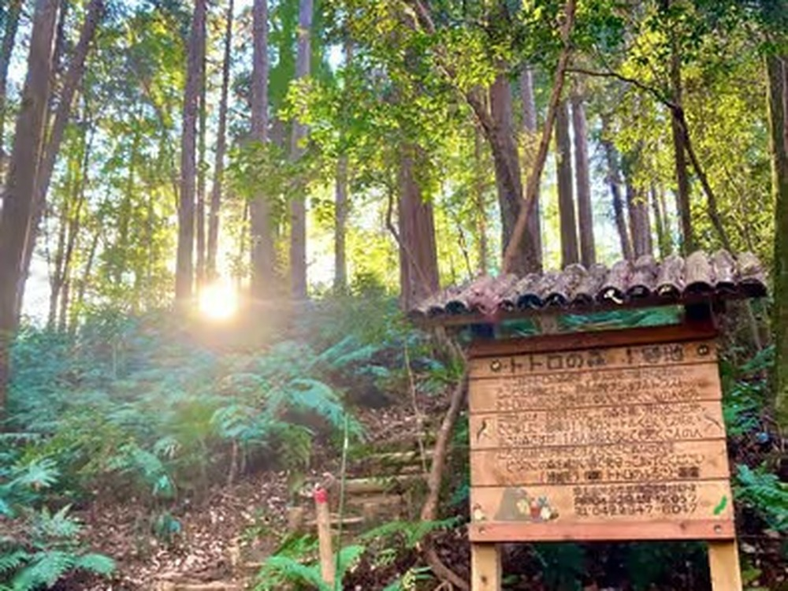

Totoro's Forest Is Real — and It's 40 Minutes from Tokyo
Every week, thousands of visitors line up at Ghibli museums and merchandise shops. Almost none of them know that the actual landscape that inspired My Neighbor Totoro — the tangled woods, the farm lanes, the sleepy shrines — is sitting quietly on the western edge of Tokyo, about 40 minutes from Ikebukuro by train.
The Sayama Hills straddle the border between Tokyo and Saitama: roughly 3,500 hectares of woodland, tea fields and hidden ponds that somehow survived the city growing around them. Hayao Miyazaki has lived in this area for decades, and the connection is no secret in Japan — the local conservation movement that protects these woods is literally called the Totoro no Furusato ("Totoro's Homeland") Fund, and Studio Ghibli has supported it for years. When you walk the cedar paths here, you're not walking through a theme park recreation. You're walking through the real thing.

What the walk actually feels like
You leave the station, and within ten minutes the convenience stores give way to tea fields. The trail dips into the forest and the temperature drops a few degrees. On a weekday morning you might share the entire hillside with two farmers and one very unbothered cat. There's a hidden lake — Lake Sayama — that appears suddenly through the trees, wide and silver and completely free of tour buses.
And then there's the tea. These hills produce Sayama tea, one of Japan's classic tea regions, famous for a deep, roasted sweetness that locals swear beats the more famous names. On my walks we stop for a cup poured by a local farmer. It tastes better outdoors. Everything does.
Why you've never heard of it
Because nobody's selling it. There's no gate, no gift shop, no English signage to speak of. The Sayama Hills are simply where west-Tokyo locals go to breathe — which is exactly why they're worth your time, and exactly why they're easier with someone who knows the trails, the tea farmers, and which paths are magical after rain (and which are just mud).
Walk it with a local
Totoro-Inspired Forest, Lake Sayama & Local Tea Walk — half-day, max 6 guests, ★5.0 on GetYourGuide.
Check dates & book →